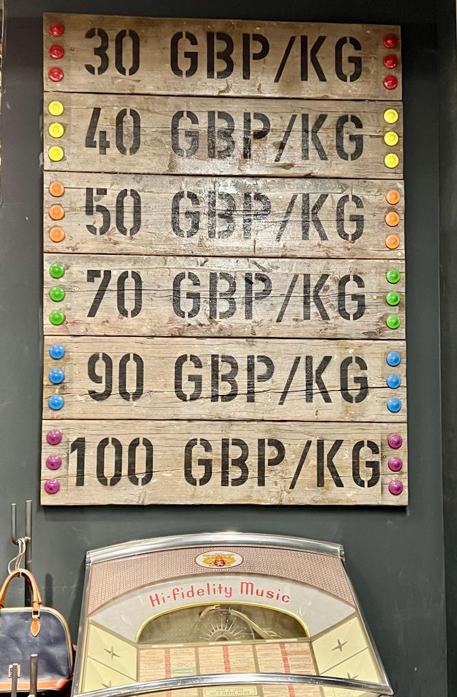

IB Docs (2) Team
IB Docs (2) Team

Creativity
Case Study 3 - Tesla
Tesla is an American multinational company known globally for its well-designed, high-quality and high-performance electric vehicles. The company was founded by Elon Musk in 2003, and launched its first all-electric Model S car back in 2012. Sales of Tesla’s electric cars reached 509,737 vehicles and sales revenue of $31.5 billion by the end of 2020.
The creativity and innovations of the company means it also specialises in the manufacturing and development of lithium-ion battery energy storage as well as solar panel manufacturing. Tesla employs more than 70,700 workers, and has assets valued in excess of $52.2 billion (more than the GDP some countries, such as Jordan, Bahrain, Paraguay, and Estonia - and more than twice the GDP of Iceland!)
Case Study 4 - Airbnb and overtourism
Do creativity and innovation always bring with it positive change? Read this case study about the unintended controversial consequences caused by Airbnb.
Airbnb is a highly popular C2C e-commerce platform used across the world. Private property owners can rent out vacation homes for short-term lets, which gives customers a huge range of options beyond the traditional hotel. Interestingly, Airbnb does not own any of its listed properties, but earns money by receiving commission from each booking made by customers.
The popularity of Airbnb has increasingly been under criticism for accelerating overtourism across the world. Overtourism occurs when destinations are visited by excessive numbers of tourists, beyond the natural capacity of the ecological system and local infrastructure. Overtourism often leads to the destruction of local cultures as well as creating shortage in the housing and accommodation market for local residents.
Watch this short video clip which features the capital city of Prague joining calls for Europe-wide restrictions on Airbnb to combat overtourism.
Airbnb was established in August 2008, during the middle of the global financial crisis, but the company's creative and innovative online platform has meant the firm has gone on to become one of the world's most successful e-commerce businesses. Airbnb reported global sales revenue in excess of $4.7 billion in 2019 before the COVID-19 pandemic.
Case Study 5 - The most innovative companies of 2020
In today’s fast-paced corporate world, businesses have to stay relevant in order to survive and thrive. As a result, it has become increasingly more important for businesses to prioritise innovation. For example, Huawei - the Chinese tech company - invested $19 billion in research and development (R&D) in 2019. The investment seems to be paying off as Huawei sold more smartphones in 2019 than Apple.
Each year, the Boston Consulting Group (BCG) ranks the 50 most innovative companies on the planet. The companies are ranked based on four variables:
Global “Mindshare”: The number of votes from all innovation executives
Industry Peer Review: The number of votes from executives in a company’s industry
Industry Disruption: A diversity index to measure votes across industries
Value Creation: Total return to shareholders
The top 10 most innovative companies in 2020, based on research by the BCG, is shown below:
Apple (technology)
Alphabet (technology)
Amazon (consumer goods)
Microsoft (technology)
Samsung (technology)
Huawei (technology)
Alibaba (consumer goods)
IBM (technology)
Sony (consumer goods)
Facebook (technology)
It may bot seem intuitive, but US retail giant Walmart came 13th in the rankings. Walmart has put significant efforts into its e-commerce and omnichannel offerings (a multichannel approach to sales that seeks to provide customers with a seamless shopping experience). For instance, the company launched NextDay Delivery in 2020, and now offers one-day delivery to a majority of the US population. Walmart also has a growing stake in the Chinese e-commerce platform JD.com.
The BCG has been ranking the most innovative companies since 2005. Eight companies have made the list every year since then:
Apple
Alphabet
Amazon
Microsoft
Samsung
IBM
Hewlett-Packard
Toyota
These companies are what the BCG call "serial innovators" and have managed to create innovation systems and cultures to foster creativity and agility in ever-competitive markets. It is intentional, and although expensive the long-term rewards can be very significant.
Source: adapted from Visual Capitalist
ATL Activity 1 - Pizza Hut
Read this article from The Washington Post and answer the following questions about Pizza Hut’s creative new packaging.
Click the link here to read the article, and answer the questions that follow.
Questions
- Who is Nicolas Burquier?
Pizza Hut’s chief customer and operations officer (CCOO) - Why is the new box claimed to be better for the environment?
The round-shaped box means there is less waste - What is the box made out of?
Sustainably harvested plant fibre, which is compostable - How do the boxes supposedly help to improve the taste of the pizzas being delivered?
The grooves at the bottom catch grease and help to circulate air, preventing the pizzas getting soggy - How do the new boxes help with Pizza Hut’s deliveries?
The boxes interlock and stack easier - How long did it take to get the new boxes developed?
Two years - Why have pizza companies not introduced new, innovative pizza boxes in the past?
The cost of doing so proved to be too expensive - Did the reporters/researchers conclude that these new boxes were any better?
No, in fact there were some complaints, including the temperature being 2 degrees warmer with the traditional cardboard boxes!
Top tip!
For students wishing to read beyond the syllabus and/or looking for a theory beyond of the syllabus to help with their Extended Essay, take a look at the EE webpage for information about The 4Ps of Innovation, by Tidd & Bessant.
Watch this entertaining advert about the (bright) future of paper, despite creativities of the modern world:
Another example is the creative ways used by some businesses during the Halloween season in 2020. The global coronavirus pandemic caused some entrepreneurs to set up drive-thru haunted houses for a healthy Halloween experience, using Bluetooth technologies to add to the 'scare factor'. One of these businesses featured in the video is a car wash-turned-haunted house enterprise in Copiague, New York, where parents can got their car cleaned and gave their young children a thrilling Halloween experience at the same time.
The lack of a creative mindset in an organization can lead to devastating effects. The collapse of Blockbuster (movie rental hire) is one example:
A more recent example is the bankruptcy of Toys R Us, which failed to make the most of Internet technologies:
Creativity and Theory of Knowledge (TOK)
What is the best thing that has ever been created?
What is the best possible future discovery or creation?
"Innovation distinguishes between a leader and a follower." - Steve Jobs (1955 - 2011), co-founder and former CEO of Apple. To what extent do you agree with this statement?
Watch this short video from BBC News showing the creative and innovative use of jet-packs for paramedics who managed to reduce the rescue time from around 25 minutes to an incredible 90 seconds! The video features UK-based developers working with paramedics in the Lake District to test a jet suit's suitability in responding to emergency situations.
Creativity - Case studies
This Home Was 3D Printed in Only 24 Hours and for Just $10,000
ATL Activity 2 - Creativity, technology, and the job market
Read this interesting article from The South China Post about 13 new tech jobs created in China, including the impact of Artificial intelligence (IA). Click the link here.
Reflect on the extent to which innovation can change and create employment opportunities.
ATL Activity 2 - "Business is everywhere" Photo Competition
Students can get creative with this "Business is everywhere" Photo Competition. This works particularly well during a school vacation, such as a mid-term break or a summer holiday.
During their travels, students should take some photos of things they see that reminds them of something that they have studied in IB Business Management. On their return to school, students should present their photos and provide a brief explanation for the rest of the class.
Some examples are shown below (click on icon).
Car licence plates associated with Business Management (Hong Kong)

Creative pricing by independent clothes retailer (Covent Garden, London, UK)
Creativity and Theory of Knowledge (TOK)
In the context of Business Management, what is the difference between creativity and change?
Did you know?
World Creativity and Innovation Day is on 21st April?
It is often said that insanity is doing the same thing, the same way, over and over, and expecting better results. World Creativity and Innovation Day gives people the perfect excuse to try to do things in new/different ways with the hope or intention of finding more effective solutions to accomplish things - such as chores at home or work processes in the office.
Creativity and innovation are beneficial in all walks of life, including jobs and careers. For example, creative methods of customer service can improve a firm's competitive edge by giving customers a special and unique experiences. Similarly, they enable entrepreneurs and business managers to find new ways to solve problems. World Creativity and Innovation Day encourages all individuals to imagine a better world for everyone with different and improved solutions.
Creativity - Integrating the key concepts with the syllabus
“The biggest risk is not taking any risk... In a world that’s changing really quickly, the only strategy that is guaranteed to fail is not taking risks.”
- Mark Zuckerberg (b.1984), co-founder of Facebook
Examples of content from the IB Business Management syllabus that allows for the exploration of creativity as one of the four key concepts include the following:
Unit 1.3 - What is the role of creativity when setting business objectives?
Unit 1.4 - What role does creativity play in the resolution of conflict between stakeholders?
Unit 1.5 - How important is creativity for the growth and evolution of a business?
Unit 1.6 - To what extent does the threat or presence of MNCs foster creativity?
Unit 2.1 - What is the role of creativity in the gig economy?
Unit 2.2 - Is there any role for creativity in bureaucratic organizations?
Unit 2.3 - Why is creativity important in leadership?
Unit 2.4 - Do autocratic leaders necessarily suppress creativity in the workplace?
Unit 2.5 (HL only) - How might creative thinking in the workplace foster an innovation culture within the organization?
Unit 3.3 - What role does creativity have in developing the revenue streams of a business?
Unit 3.4 - With reference to intellectual property rights (IPRs) as noncurrent assets, discuss the importance of creativity for business success.
Unit 4.4 - How might creativity support market research?
Unit 4.5 - What is the role of creativity in marketing?
Unit 4.5 - Why is creativity important in social media marketing?
Unit 4.6 (HL only) - How important is creativity for international marketing?
Unit 5.2 - Why might creativity be important for job production and mass customization?
Unit 5.7 (HL only) - Is there are role for creativity in crisis management and contingency planning?
Unit 5.8 (HL only) - Discuss the role of creativity in research and development.
Unit 5.9 (HL only) - Discuss how virtual reality (VR) encourages creativity in business organizations.
BMT 10 (Porter's generic strategies) - Discuss the role of creativity in formulating strategies to gain competitive advantages.
Links to the CAS programme (creativity in particular).
For teachers, this video featuring Sir Ken Robinson is a classic, entitled "Do Schools Kill Creativity?" He argued for an education system that nurtures (rather than undermines) creativity. He goes as far as suggesting that creativity in schools in just as important as literacy, and that we (as educators) should treat it with the same status.
Return to the key concepts homepage

 Twitter
Twitter
 Facebook
Facebook
 LinkedIn
LinkedIn